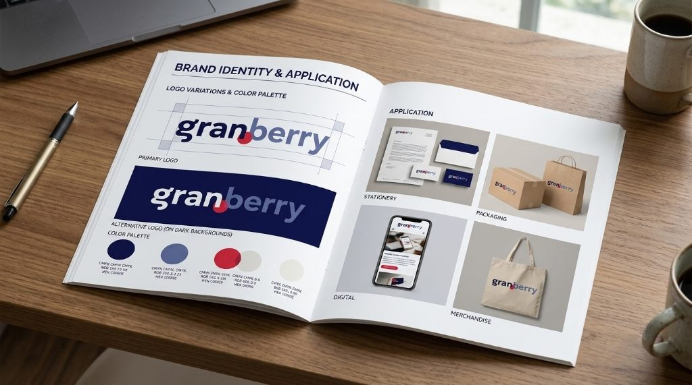
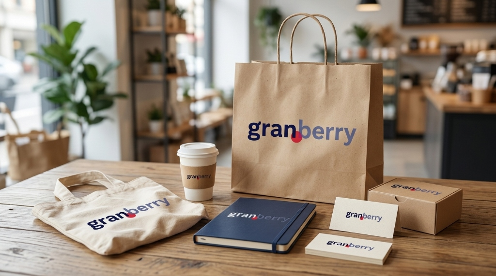
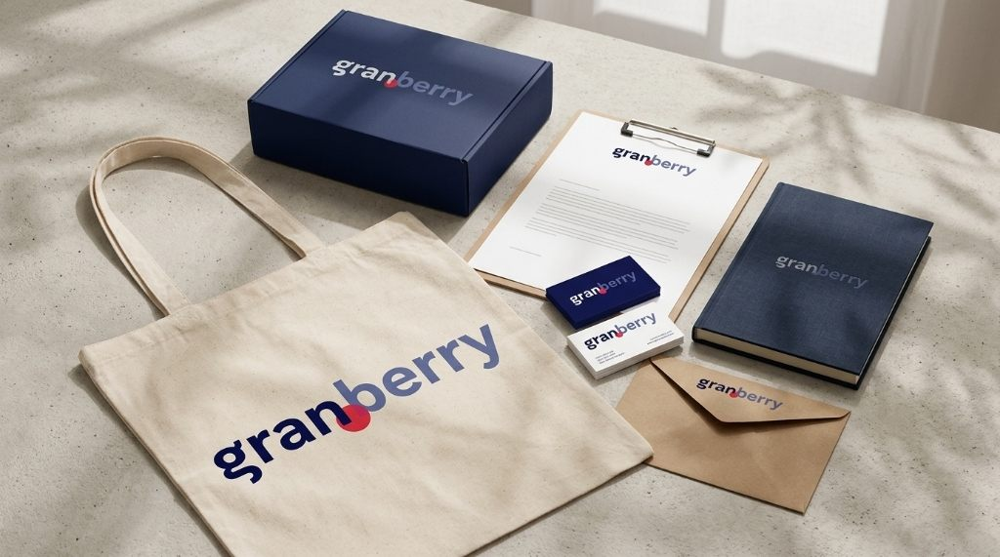
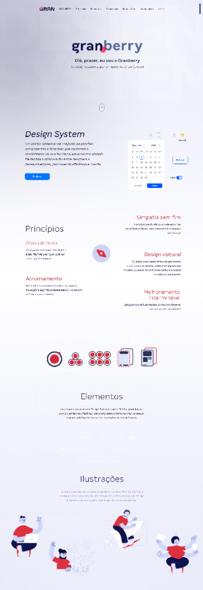
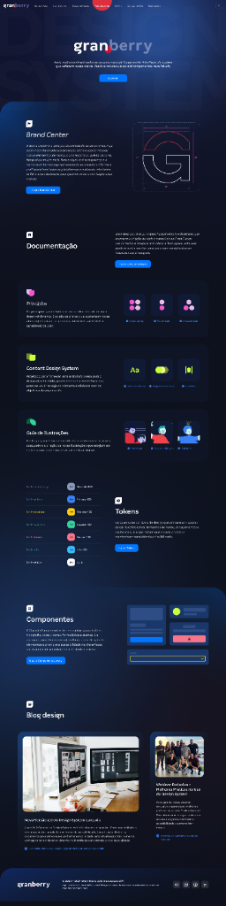

Uma marca amigável.
Um sistema que escala.
Do logotipo às diretrizes de produto digital: a concepção visual do Granberry, o Design System do Gran Cursos. Um projeto que conecta identidade de marca, enxoval físico de cultura interna e um portal completo de documentação com tokens, princípios, componentes e guia de ilustrações.

Rigor técnico com
um ponto de simpatia.
Para dar nome e rosto ao ecossistema de design do Gran Cursos, nasceu o Granberry. O logotipo parte de uma construção tipográfica geométrica em caixa-baixa que divide visualmente a raiz institucional (gran, em azul marinho profundo) e a personalidade do sistema (berry, em azul ardósia).
No encontro entre as letras n e b, a esfera vermelha atua como ponto focal e síntese gráfica da fruta — um elemento mínimo que também origina o símbolo modular “G” no Brand Center e guia os acentos cromáticos na interface e nos materiais impressos.

Sacola kraft, ecobag, copo, caderno e cartões que levam a cultura do Design System para o dia a dia do time.

Contraste entre o azul marinho, o algodão cru e o papel kraft na apresentação física da marca.
Um sistema que começa
nas pessoas do time.
Um Design System só ganha tração quando é adotado como linguagem comum entre produto, design e engenharia. Por isso, além das bibliotecas digitais, a identidade do Granberry foi desdobrada em papelaria, embalagens, cadernos, ecobags e kits de boas-vindas.
A combinação do azul profundo com superfícies naturais — como papel kraft e tecido cru — equilibra tecnologia e acolhimento, reforçando a mensagem central da marca: ser o sistema de design super amigável do Gran Cursos.
Alvo certeiro &
arrumamento.
Padrões baseados em Atomic Design, tokens semânticos e componentes reutilizáveis que reduzem atrito entre design e código.
Simpatia sem fim &
design natural.
Interfaces intuitivas apoiadas por Content Design System, guia próprio de ilustrações e acessibilidade como premissa.
Melhoramento
interminável.
Documentação viva com Brand Center, versionamento contínuo (2.0) e blog interno para compartilhar a evolução do sistema.
Da apresentação amigável
ao hub técnico completo.
Para documentar e distribuir o sistema, foram projetadas duas frentes complementares da plataforma web. A versão clara apresenta o propósito do Granberry, seus cinco princípios norteadores (Alvo certeiro, Simpatia sem fim, Arrumamento, Design natural e Melhoramento interminável), a lógica de evolução de átomos a páginas, as categorias de elementos e o estilo de ilustração.
Já o portal em modo escuro organiza a consulta diária das equipes: acesso rápido ao Brand Center (com grid construtivo do símbolo), Documentação, Content Design System, Guia de Ilustrações, tabela de Tokens de cor, biblioteca de Componentes e Blog de Design.
Duas superfícies.
Um mesmo ecossistema.

Apresentação amigável do sistema, amostra de componentes, os 5 princípios, estrutura atômica, categorias de elementos e linguagem de ilustração. Role para navegar.

Hub técnico com Brand Center (grid do símbolo G), trilhas de documentação, Content Design System, Guia de Ilustrações, Tokens semânticos, Componentes e Blog. Role para explorar.
Role dentro de cada janela para percorrer as páginas completas ou alterne nas abas acima para focar em cada versão.
Tema claro: boas-vindas ao Granberry, visão geral do Design System, princípios, metodologia atômica, elementos e ilustrações autorais.
Tema escuro: Brand Center, Documentação, Content Design System, Guia de Ilustrações, Tokens, Componentes e Blog de Design.